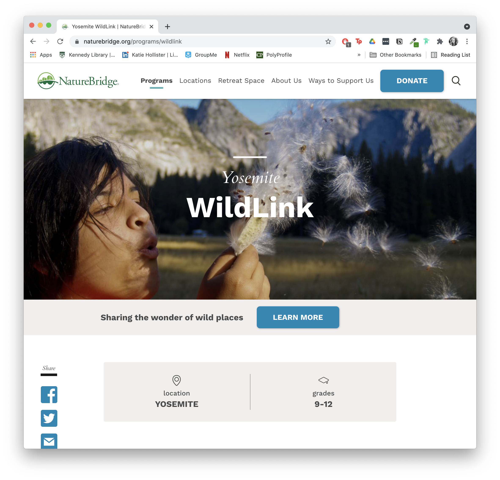
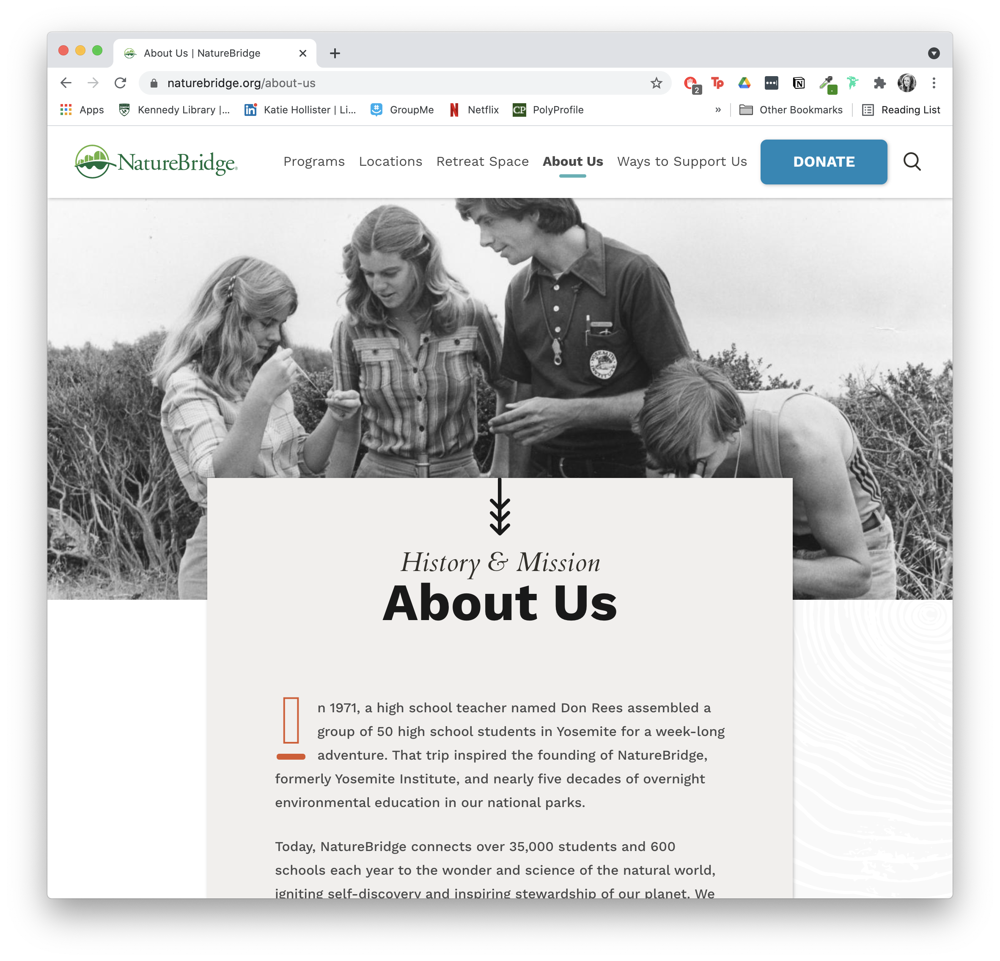
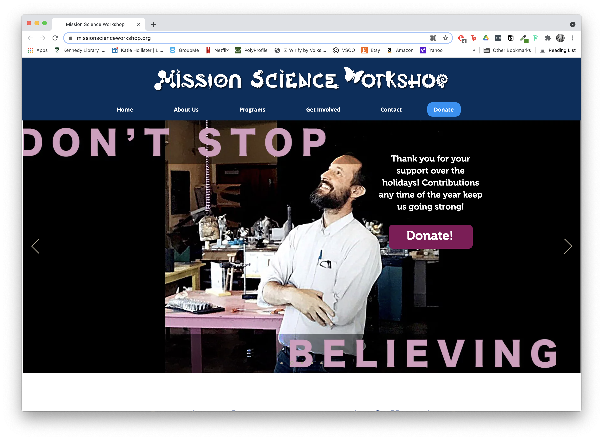
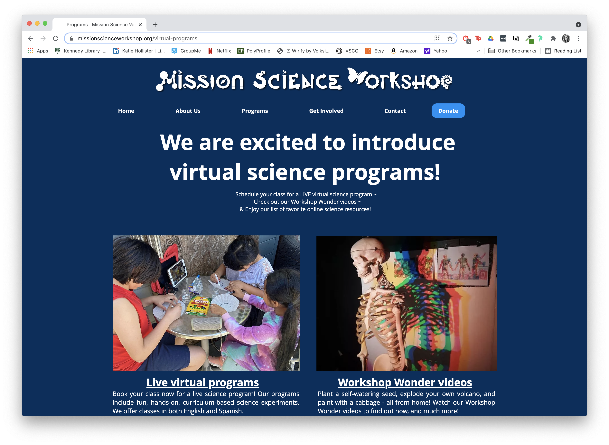

Final project proposal
Introduction
New Leaf Collaborative
New Leaf Collaborative is a 501c3 non-profit corporation based out of Concord, CA that provides and support hands-on learning and leadership opportunities for K-14 students in the natural sciences. Their goal is to re-invent student learning through exploration, community-based service and introduce career pathways that involve conservation and sustainability.
Target audience
K-14 students, their parents, fellow educators, program sponsors and organization members will all use this site.
Students and their parents will use the site to sign up for educational courses and workshops. Educators will use the site to browse with the organization's events and staff members with the potential of volunteering to teach a workshop. Program sponsors will use the site to stay updated on the progress that the organization has made with the funds that they have provided. Organization members will use this site to manage their class bookings, and encourage new students and donors to join them in their efforts to educate city youth.
Comparative Analysis
Common Vision


Nature Bridge
 Mission Science Workshop
 Website content
About
[Slideshow of Children Planting Seeds with their Teacher, Lauching Science Experiments in the Classroom, Going On Hikes, Holding Class Animals etc.]
Mission
The New Leaf Collaborative provides hands-on, experiential learning and leadership opportunities, in areas of science, nature and ecological literacy in order to nurture the social and emotional health of TK-14 students, educators, and community partners.
Vision
The New Leaf Collaborative fosters community, provides resources, and offers expertise to students so that learning is linked to real-life exploration, community-based projects and career-focused pathways. We want to cultivate healthy communities and individuals, intellectually curious learners, and responsible, ecologically literate citizens.
Values
-
Connection
Connection precedes content “Seek first to understand, then to be understood” is foundational to personal interactions Celebration of small and large achievements is practiced Curiosity is inspired Relational trust is cultivated as part of the daily curriculum
-
Empowerment
Experiential and emergent and learning is facilitated Honor and encourage diversity Reflection leads to appreciation Play is medicine Everyone’s voice is heard and respected
-
Service
Individual and team work are both valued Everyone is a teacher Community involvement is an integral part of the classroom Learning leads to action that provided a service to others Connection to place is cultivated
-
Transformation
Challenges are embraced and seen as opportunities for growth A place of trust that allows and encourages authenticity and vulnerability is created Learning can occur everywhere and is interdisciplinary Cycles of action and reflection are imbedded into every activity The Hero’s Journey is used as a model of growth and development
-
Sustainability
Systems of renewal are in place Balance, joy and spaciousness are considered integral elements of all experiences Systems thinking is employed in the designing and creating of experiences Relationships with nature and place are nurtured Mindfulness is taught and practiced
Our Team
Board of Directors
[Team Photo of New Leaf Collaborative Directors and Staff Members]
-
Carol Adams
[Photo of Carol Adams]
Carol Adams is a retired school principal and former high school teacher. She spent her career dedicated to discovering how to engage students in their own learning by providing alternative opportunities to learn,which also support their emotional and social well being. The mission and vision of the New Leaf Collaborative match Carol’s lifelong vision of collaboration between community and schools to provide alternative learning opportunities for students to grow as individuals and spark a joy of learning.
-
Melissa Boyd
[Photo of Melissa Boyd]
Melissa has been an educator at the secondary level for over 20 years. She serves on the NLC board because she believes deeply in programs that connect students to learning, to their community and to their world. As one of the first participants in the “Empowering Educators” program, Melissa learned about the power of social-emotional learning, for educators and for students, and saw relational trust built at both levels, when students were invited in to train the educators. It has been her joy to watch students be empowered and flourish in the programs provided by NLC for nearly a decade. Her dreams for NLC include future programs in the performing arts, to further empower and connect students.
-
Ellen Concepcion
[Photo of Ellen Concepcion]
Ellen is the co-founder and Executive Director of New Leaf Collaborative and oversees the Community Science Workshop Program, she also teaches 7th & 8th grade science at Mare Island Technology Academy. Through New Leaf Collaborative’s programs, Ellen hopes to inspire youth to learn, act and think creatively, confidently and responsibly and to introduce them to career options that lead to sustainable prosperity.
-
Corinne Christiansen
[Photo of Corinne Christiansen]
Corinne has been teaching for 21 years in Japan and California. She believes that every student wants to succeed but may not know how. She sees her job as helping her students gain the strategies and skills that will help them become successful in class, in the community and in their future. Corinne co-founded the New Leaf Leadership Academy and Empowering Educators.
-
Wendy Ke
[Photo of Wendy Ke]
I’ve always preferred being outdoors to indoors, where I feel most at “OM.” Connecting with nature is an essential part of my day that inspires and rejuvenates me and creates balance in my life. As a result, I’ve sought work and volunteer paths related to the natural environment including: working for local governments overseeing municipal environmental programs; guiding public and school naturalist programs as a National Park Service Ranger; leading active travel vacations internationally for Backroads; and volunteering in my daughter’s schools with hands on, science based programs/activities. During the time I devote to NLC’s experiential learning programs, I hope to instill in others a passion, curiosity, respect and appreciation for the natural world, as well as a desire to preserve and protect it.
-
Jennifer Kennedy
[Photo of Jennifer Kennedy]
Jen Kennedy is a art educator in the Mt. Diablo Unified School District. As well as being a teacher of 21 years, she is a working photographer. Jen’s experience in the classroom has lead her to find that the heart of successful education comes through working on the connection students have to each other, their environment & their ability to speak their voice.
-
Ron Skrehot
[Photo of on Skrehot]
I am retired from information technology and have been an advocate for education for many years. I also volunteer with the John Muir Elementary PTA where supplementing education for all students is the first priority. Since joining New Leaf my desire is to work with community partners to help find resources to provide supplemental learning experiences inside and outside of the regular classroom. With a focus on science and technology I hope to help students prepare for their future in Martinez and surrounding communities.
-
Rona Zollinger, Ph.D.
[Photo of Rona Zollinger]
Rona Zollinger, NLC’s co-founding board member and Empowering Educators Program Manager, finds inspiration in the process of imagining and designing educational environments that nurture connections between teachers, students, communities and the earth. As part of New Leaf Collaborative, she hopes to inspire communities to work together toward a more sustainable and joyful future.
Our Partners
[Grid of Logos of Partnering Organizations and Businesses.]
Get Involved
Earth Ambassador Programs
Recycling Ambassadors
New Leaf Collaborative is working with the City of Martinez, Republic Services, and the Martinez Unified School District to implement CalRecycle’s highly competitive Beverage Container Recycle Grant Program.
Our Recycling Ambassadors program is designed as a comprehensive project to improve recycling practices throughout Martinez schools. We use hands-on, project-based learning to foster environmental stewardship.
Rainwater Ambassadors
The NLC has worked with Lunchbox International to provide the professional expertise for rainwater catchment system training and installation. In this program, high school students are oriented to the issues of water conservation and rainwater catchment education through guest speaker presentations and offered job experience in rainwater catchment installation.
Internships
Ecoliteracy Peer Mentoring Internship
The Ecoliteracy Project was designed to be a model of intra-school and community collaboration in ways that promote the care and stewardship of our city, our creeks and our bay. In this project, Martinez Unified students from grades K-5 have the opportunity to participate in grade appropriate, hands-on, place-based education about water quality, water conservation and watershed health. Over the last 10 years, student interns have taught more than 6,000 elementary students.
Community Science Internship
The NLC Community Science Workshop offers high school students in-school and after school internships to work with elementary school students in fostering curiosity and open ended exploration of science. Interns help young learners make connections as to why science is important to them and relevant in their lives.
In CSW’s, high school students participate weekly in activities that fostered STEM (Science, Technology, Engineering and Math) and focused critical thinking. Interns are required to apply and be interviewed (same process as noted above) for this internship. CSW water-quality and conservation lessons include hands-on projects, displays and informative exhibits that focus on water quality, watershed stewardship and potable water conservation practices.
Our Programs
Science Workshops
[Photo of Students at Science Workshop]
Garden Workshops
[Photo of Students at Garden Workshop]
Eco Kids at Home
[Photo of Students at Eco Kids at Home workshop]
Join us for our Eco Kids at Home workshop sessions! We will meet virtually each day for 4 days [for just over an hour a day] to connect and create together as we learn about ecosystems, water conservation, recycling, and more. We’ll be back Summer 2021!
Donate
Invest in the Next Generation of Environmental Stewards
Ways to Support Us
At New Leaf Collaborative, we envision a society transformed by new generations that understand, celebrate and protect the natural world. Our donors help make that vision a reality. We know that when you give kids the opportunity to discover the wonder of the natural world and the knowledge of how it works, they will be inspired to protect it for the future.There are many ways you can help New Leaf Collaborative community members discover themselves, connect with others and make a positive impact on the world. However you support us, you’ll be making an investment in the next generation and an investment in the environment.
Join The New Leaf Community
-
Attend an event
-
Sponsor an event
-
Donate goods or services
-
Shop at the New Leaf Collaborative Store
Wear your love for the environment on your sleeve. Visit the New Leaf Collective store to find eco-friendly clothing that supports our programs.
Become A New Leaf Sponsor
Monthly donors provide a steady stream of support our kids can count on. By joining our Stewards Circle with a monthly gift, you’ll give kids the chance to discover the joy and wonder of the natural world year-round.
Be Our Business Partner
Want your business to make a positive impact on kids and the environment? Become a partner today and help us amplify our mission of connecting kids with the joy and wonder of the natural world.
Increase Your Impact
Your gift could be doubled, or even tripled, by your employer! Some companies even match donations from spouses & retirees. By using your corporate matching gift program, you can maximize the value of your gift at no additional cost. Visit newleafcollaborative.org/match or check with your company's Human Resources department to see if your company has a matching gift program.